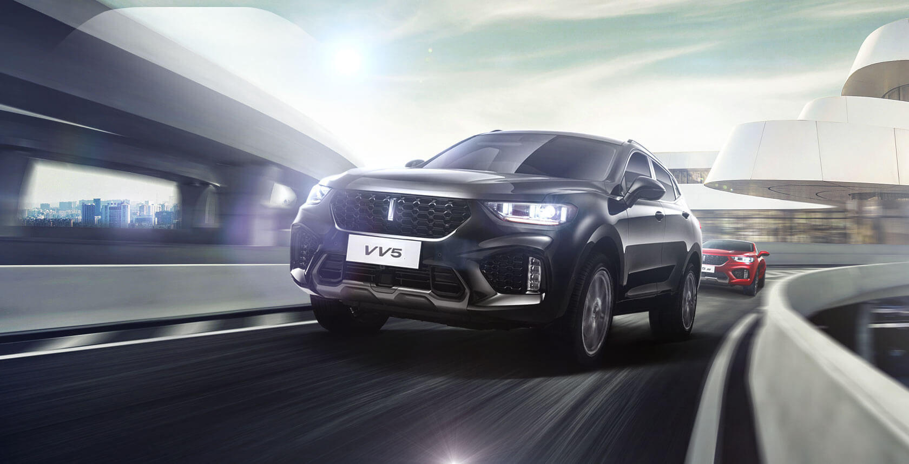
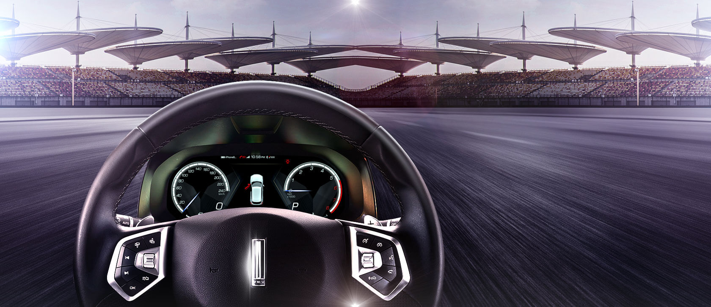
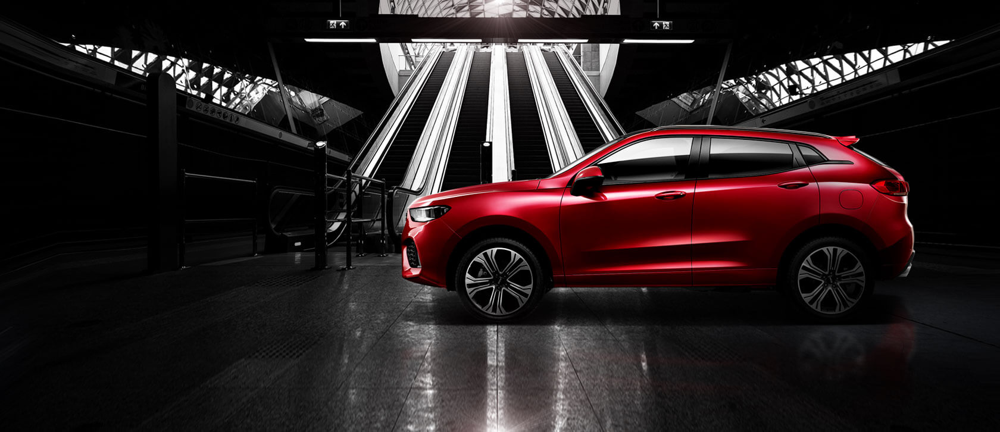
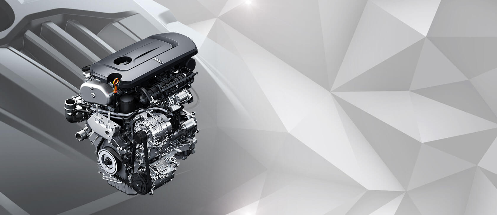
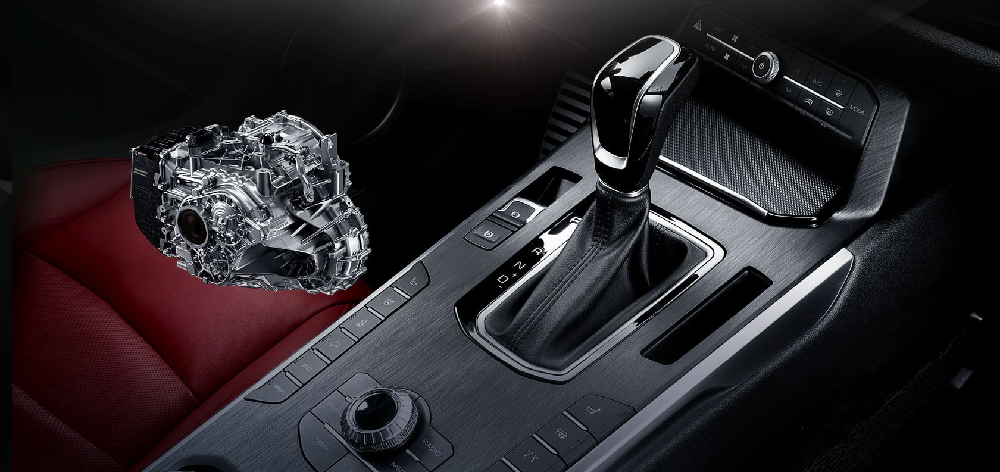

概览
外观
内饰
安全
科技
操控
配置与价格
预约试驾

劲 ◆ 享驾控 操控
操控人生的乐趣，从操控一段旅程开始。VV5系列，以强大的动力和对驾驶体验细节的考究，
为你智造充满乐趣的驾控体验，让你的旅途，充满悸动与喜悦！

把握方向 ◆ 更把握 豪华质感
用年轻，去把握人生的方向，用豪华，把握质感的方向！
以头层真皮包裹的VV5多功能运动方向盘，
集成多媒体控制、巡航控制等功能，
匹配EPS电动助力调节功能，
以细腻的皮质和令人赞叹的助力感受触动你内心对豪华的向往。

让青春 ◆ 尽情 甩尾
超长轴距的车身结构，以及车尾布局的巧妙构思，
让你在享受大空间的同时，
尽情享受操控性带来的驾驭乐趣！

青春，在最强劲的 ◆ 内心中 爆发
年轻的爆发力，在新一代2.0T涡轮增压直喷发动机中得以尽情展示。
少数豪华品牌才装备的电控涡轮增压技术，
可实现 1000rpm超低转速涡轮介入，扭矩输出最高达到355N•m，
与7速湿式双离合变速器实现完美匹配，
让您在轻快迅捷的驾驭体验中，释放青春的爆发力！
8.9s破百 ◆ 挑战你的 运动底线
2.0T + 7DCT黄金动力组合实现0-100km/h 8.9s加速时间，动力强劲不惧挑战，
让你在8.9s的极速中体验年轻的运动极限。

最佳的动力状态 ◆ 最低的油耗状态 最佳,最低
VV5采用国际专家团队自主研发的湿式双离合7速变速箱，以更高的可靠性，成熟的技术，有效提升燃油的经济性，
让你在享受卓越的加速感的同时，完全不用担心油耗问题！
查找最近经销商
无论你身在何处，通过WEY网络，即可更快更方便地找到您的首选经销商，轻松享受各项专属服务
省/市
浙江省
广东省
福建省
四川省
市/区